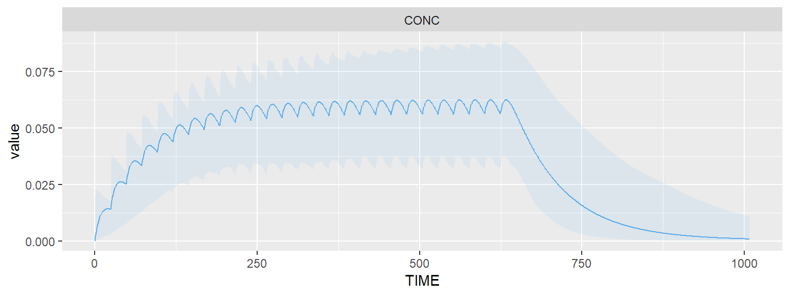
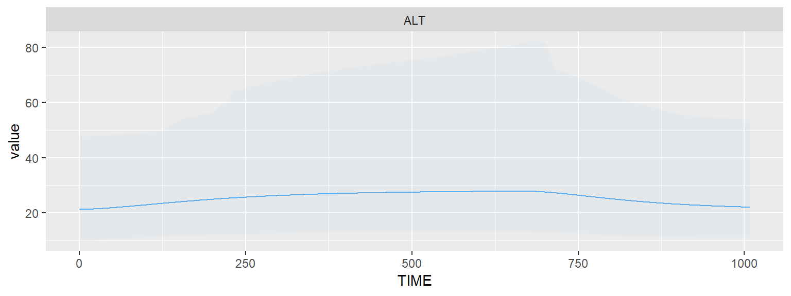
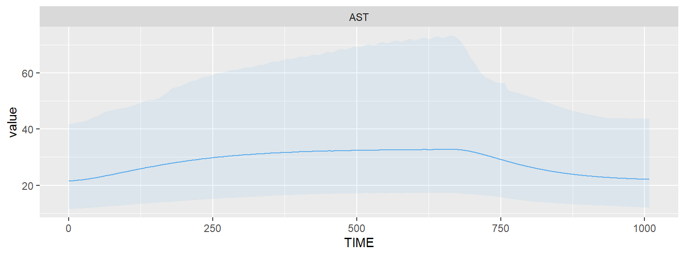
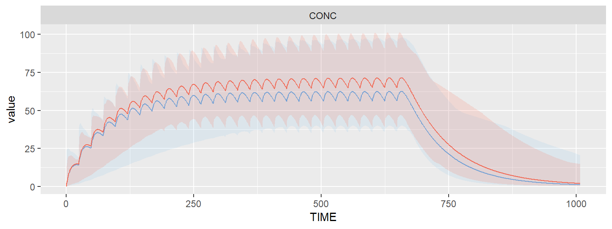
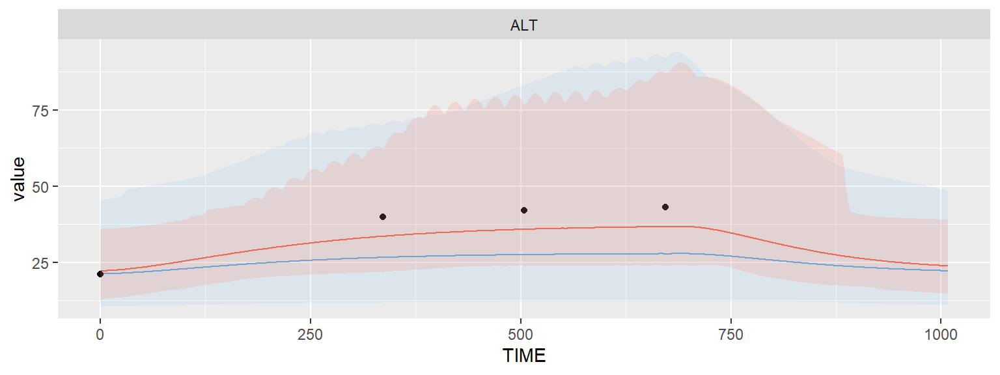
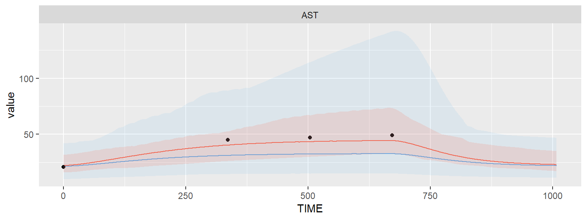

Multiple endpoints in TDMore
Source:vignettes/tdmore_multiple_endpoints.Rmd
tdmore_multiple_endpoints.RmdWriting and testing the PK model
In this vignette, we will learn how TDMore can deal with multiple endpoints. The PK/PD models chosen to illustrate this section are based on the following paper: “Population PK/PD modeling of Sunitinib by dosing schedule in patients with advanced renal cell carcinoma or gastrointestinal stromal tumor.”.
Let’s start writing the Sunitinib PK model.
library(nlmixr)
modelCode <- function(){
ini({
TVCL <- 34.1
TVVc <- 2700
TVKa <- 0.126
TVVp <- 774
TVQ <- 0.688
ECL ~ 0.060516 # 24.6%
EVc ~ 0.052900 # 23.0%
EKa ~ 2.755600 # 166%
EPS_Prop <- 0.417
})
model({
CL <- TVCL * exp(ECL)
Vc <- TVVc * exp(EVc)
Vp <- TVVp
Q <- TVQ
K12 <- Q/Vc
K21 <- Q/Vp
Ke <- CL/Vc
Ka <- TVKa*exp(EKa)
d/dt(depot) = -Ka*depot
d/dt(center) = Ka*depot - Ke*center - K12*center + K21*periph
d/dt(periph) = K12*center - K21*periph
CONC = center/Vc
CONC ~ prop(EPS_Prop)
})
}The TDMore object is instantiated as follows:
A basic regimen can be created to test that the model is running properly. The standard regimen of Sunitinib is 50mg daily for 4 weeks.
regimen <- data.frame(
TIME=0, # First dose time: t=0h
AMT=50, # Dose amount: 50 mg
II=24, # Dose interval: 24h
ADDL=4*7-1 # Additional doses: 4 weeks
)
times <- seq(0, 6*7*24) # Observation timesThis regimen can be plotted using the default TDMore plotting function. It shows the typical value of the population and the between-subject variability (95% confidence interval).
plot(m1, regimen, newdata=times)
Adding a PD model
Suppose we received a full blood workup: Sunitinib concentration, Alanine aminotransferase (ALT), Aspartate aminotransferase (AST), Absolute neutrophil count (ANC), Platelet count (PC) and Lymphocyte count (LC). We also measured the patient’s diastolic blood pressure (DBP).
We can create a single model to predict all of these aspects. In the example below, we will focus on ALT and AST. Please note the mandatory ‘|’ nlmixr syntax used to describe the residual variability of different endpoints.
modelCode <- function(){
ini({
# PK model sunitinib
TVCL <- 34.1
TVVc <- 2700
TVKa <- 0.126
TVVp <- 774
TVQ <- 0.688
ECL ~ 0.060516 # 24.6%
EVc ~ 0.052900 # 23.0%
EKa ~ 2.755600 # 166%
EPS_Prop <- 0.417 # Proportional error 1 (related to CONC)
# PD model ALT
TVBASE_AST <- 21.5
TVKout_AST <- 0.0142
TVKpd_AST <- 0.00572
EPS_Prop_AST = 0.257 #25.7%
# PD model AST
TVBASE_ALT <- 21.2
TVKout_ALT <- 0.00916
TVKpd_ALT <- 0.00401
EPS_Prop_ALT = 0.373 #37.3%
# We assume 0.5 correlations in IIV, even though they are not reported in the original paper
EBASE_AST + EBASE_ALT ~ c(0.101124,
0.05028021, 0.164025) # 31.8% #40.5%
EKout_AST + EKout_ALT ~ c(1.440000,
0.1897367, 1.638400)#120% #128%
EKpd_AST + EKpd_ALT ~ c(0.114244,
0.05344249, 0.324900) #33.8% #57.0%
})
model({
# PK parameters
CL <- TVCL * exp(ECL)
Vc <- TVVc * exp(EVc)
Vp <- TVVp
Q <- TVQ
K12 <- Q/Vc
K21 <- Q/Vp
Ke <- CL/Vc
Ka <- TVKa*exp(EKa)
# AST parameters
BASE_AST <- TVBASE_AST * exp(EBASE_AST)
Kout_AST <- TVKout_AST * exp(EKout_AST)
Kpd_AST <- TVKpd_AST * exp(EKpd_AST) #mL/ng
Kin_AST <- Kout_AST * BASE_AST
# ALT parameters
BASE_ALT <- TVBASE_ALT * exp(EBASE_ALT)
Kout_ALT <- TVKout_ALT * exp(EKout_ALT)
Kpd_ALT <- TVKpd_ALT * exp(EKpd_ALT) #mL/ng
Kin_ALT <- Kout_ALT * BASE_ALT
# PK model
d/dt(depot) = -Ka*depot
d/dt(center) = Ka*depot - Ke*center - K12*center + K21*periph
d/dt(periph) = K12*center - K21*periph
CONC = center/Vc * 1000 #ng/mL
# AST model
AST(0) = BASE_AST
d/dt(AST) = Kin_AST - Kout_AST*AST*(1-Kpd_AST*CONC)
# ALT model
ALT(0) = BASE_ALT
d/dt(ALT) = Kin_ALT - Kout_ALT*ALT*(1-Kpd_ALT*CONC)
# Residual error models
CONC ~ prop(EPS_Prop) | center # Define error model 1
AST ~ prop(EPS_Prop_AST) | AST # error model 2
ALT ~ prop(EPS_Prop_ALT) | ALT # error model 3
})
}
nlmixrModel <- nlmixrUI(modelCode)
m2 <- tdmore(nlmixrModel, maxsteps=1E3*500)Let’s now have a look at the evolution of these safety signals over time. To have a good overview, we will observe ALT/AST for 4 weeks treatment. The default plot shows once again the typical value and the between-subject variability (95% CI).
regimen <- data.frame(
TIME=0,
AMT=50,
II=24,
ADDL=4*7
)
times <- seq(0, 6*7*24, by=1)
plot(m2, regimen, newdata=data.frame(TIME=times, CONC=NA))
plot(m2, regimen, newdata=data.frame(TIME=times, ALT=NA))
plot(m2, regimen, newdata=data.frame(TIME=times, AST=NA))
Estimating individual parameters
We get the values for ALT/AST for a specific individual. These are quite high!
observed <- data.frame(
TIME=c(0, 2,3,4)*7*24,
CONC=NA,
ALT=c(21, 40, 42, 43),
AST=c(21, 45, 47, 49))
ipred <- estimate(m2, observed = observed, regimen = regimen)
plot(ipred, newdata=data.frame(TIME=times, CONC=NA))
plot(ipred, newdata=data.frame(TIME=times, ALT=NA))
plot(ipred, newdata=data.frame(TIME=times, AST=NA))
Based on only ALT/AST values, we managed to define the PK inter-individual variability a little better. Indeed, these high ALT/AST values can be best explained through a combination of high sensitivity (EKpd), and a lower clearance (ECL) of the drug.
coef(ipred)## ECL EVc EKa EBASE_AST EBASE_ALT EKout_AST
## -0.13927141 -0.01279161 0.02257760 0.03233717 0.04497159 0.22456560
## EKout_ALT EKpd_AST EKpd_ALT
## 0.22778905 0.24279322 0.37291944## ECL EVc EKa EBASE_AST EBASE_ALT EKout_AST
## -0.56614395 -0.05561569 0.01360096 0.10168920 0.11104095 0.18713800
## EKout_ALT EKpd_AST EKpd_ALT
## 0.17796020 0.71832312 0.65424462